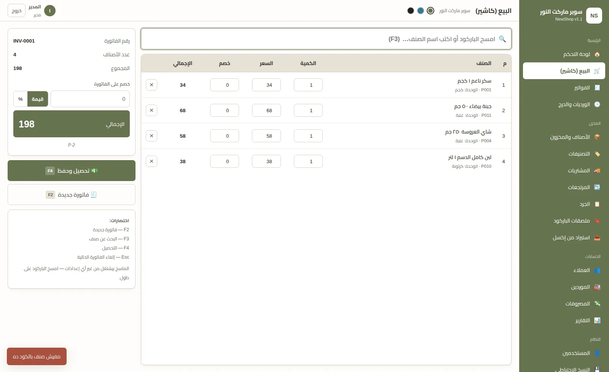
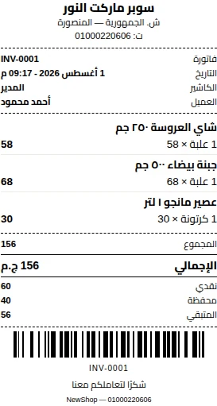

🧾
الطابعة الحرارية ٨٠ و٥٨ مم
إيصال رول زي أي كاشير محترف، فيه باركود رقم الفاتورة عشان المرتجعات. وفاتورة A4 لسه موجودة — تختار من الإعدادات.
بيع بالباركود في ثواني، اطبع على الطابعة الحرارية أو A4، اقفل درج الكاشير بالمليم في آخر اليوم، وشوف أرباحك الحقيقية. برنامج واحد بيمشّي المحل كله — وتدفع فيه مرة واحدة بس.

ست إضافات كبيرة اتعملت بناءً على اللي المحلات بتطلبه فعلًا.
إيصال رول زي أي كاشير محترف، فيه باركود رقم الفاتورة عشان المرتجعات. وفاتورة A4 لسه موجودة — تختار من الإعدادات.
كاش + فيزا + انستاباي + آجل مع بعض. وصاحب المحل بيقفل الطرق اللي مابيستخدمهاش عشان شاشة الكاشير تفضل بسيطة.
الكاشير يفتح وردية برصيد بداية، وفي الآخر البرنامج يقولك المفروض في الدرج كام — والفرق بيتسجّل عجز أو زيادة باسم الموظف.
عندك ٢٠٠٠ صنف؟ ارفع ملف الإكسل وخلاص. البرنامج بيربط الأعمدة لوحده وبيوريك معاينة قبل ما يغيّر أي حاجة.
للجزارة والخضار والجبن — امسح باركود الميزان والوزن يتحط لوحده. بيتظبط على أي ميزان، وفيه خانة تجربة في الإعدادات.
أول ما تفتح البرنامج بيقولك: إيه اللي خلص، مين العميل المتأخر، وإيه الفلوس الواقفة في المخزن. وفيه ٣ ثيمات منهم وضع ليلي.

مش مجرد كاشير — ده نظام كامل بيمسك البيع والمخزن والحسابات والأرباح مع بعض.
امسح الباركود وهو بيضيف على طول. الماسح بيشتغل من غير أي درايفر، ومعاك اختصارات كيبورد (F2 / F3 / F4) تخلّي البيع أسرع.
فاتورة محترمة فيها لوجو محلك وعنوانك ورقمك الضريبي. اطبعها على ورق أو احفظها PDF وابعتها واتساب.
كل بيع وشراء ومرتجع وجرد بيتسجل في حركة الصنف بتاريخه وسببه. تعرف في أي وقت الصنف راح فين.
البرنامج بيخزن تكلفة الصنف وقت البيع نفسه، فأرباح الشهر اللي فات ماتتأثرش لو الأسعار غليت بعدها.
فاتورة الشراء بتزوّد المخزن وبتحدّث متوسط التكلفة تلقائيًا، ولكل مورد كشف حساب ومدفوعات.
سجّل مديونية كل عميل، وشوف كشف حسابه بالتفصيل، وسجّل التحصيلات أول بأول.
الصنف بيرجع للمخزن والرصيد بيتظبط لوحده، ومش هتقدر ترجّع أكتر من الكمية اللي اتباعت فعلًا.
دخّل الكميات اللي عدّيتها، والبرنامج يحسبلك العجز والزيادة وقيمتها، ويسوّي المخزن ويسجل الحركة.
اطبع ملصقات على شيت A4 بأي عدد، وفيها اسم المحل والصنف والسعر. وللأصناف اللي مالهاش باركود بيولّده بضغطة.
مبيعات يومية وبالصنف وبالعميل، تقييم المخزون، النواقص، الأصناف الراكدة، والمديونيات — وكلها بتتصدّر Excel أو PDF.
افتح حساب لكل كاشير وحدّد يشوف إيه بالظبط. تقدر تمنعه من رؤية الأرباح أو تعديل الأسعار أو إلغاء الفواتير.
كل كاشير بورديته، وفي آخر اليوم تقرير Z بيقارن اللي المفروض في الدرج باللي اتعدّ فعلًا ويطلّع العجز أو الزيادة.
ادخل أصنافك وعملاءك من ملف بدل ما تكتبهم واحد واحد، مع معاينة توضّح الجديد والمعدَّل والصفوف اللي فيها غلط.
نواقص المخزون، أصناف قرّبت تخلص، عملاء متأخرين في السداد، وأصناف راكدة فلوسك واقفة فيها.
البرنامج بياخد نسخة لوحده كل مرة بتقفله، وبيحتفظ بآخر ١٠ نسخ. وتقدر تاخد نسخة على فلاشة في أي وقت.
دي صور حقيقية من البرنامج — مش تصميمات.
اتعمل مخصوص للمحلات في مصر والوطن العربي — بمشاكلها الحقيقية.
البرنامج بيشتغل على جهازك بالكامل. النت فصل؟ الراوتر باظ؟ البيع مكمّل عادي ومحدش هيحس.
مافيش اشتراك شهري ولا سنوي يتراكم عليك. ترخيص مدى الحياة على جهازك.
كل حاجة متخزنة على الكمبيوتر بتاعك، مش على سيرفر حد تاني. محدش يقدر يوصلها.
حجم التثبيت صغير جدًا وبيفتح في ثواني، وبيشتغل كويس حتى على أجهزة قديمة.
مش برنامج أجنبي متعرّب. كل شاشة وكل زرار وكل تقرير متصمم عربي من الأساس.
مش سنترال ولا تذاكر دعم. بتكلم اللي عامل البرنامج على طول على واتساب.
من أول رسالة لحد ما تبيع أول فاتورة — في نفس اليوم.
احكيلنا عن نشاطك وحجم المحل، ونقولك البرنامج مناسب ليك ولا لأ بصراحة، ونتفق على السعر.
نبعتلك ملف التثبيت. البرنامج هيوريك كود جهازك، تبعته لنا، ونبعتلك كود التفعيل — ويشتغل مدى الحياة.
نساعدك تدخّل أصنافك وتظبط اسم المحل واللوجو، ونفضل معاك في الدعم بعد التركيب.
أيوه، أوفلاين ١٠٠٪. مافيش أي جزء في البرنامج بيحتاج إنترنت — لا التشغيل ولا التفعيل ولا الطباعة ولا التقارير. حتى الخطوط والباركود بتتولّد جوه البرنامج نفسه.
الاتنين. البرنامج بيطبع على الطابعة الحرارية مقاس ٨٠ مم و٥٨ مم، وبيطبع كمان فاتورة A4 كاملة — وإنت اللي بتختار من الإعدادات. الإيصال الحراري فيه باركود رقم الفاتورة عشان تلاقيها بسرعة وقت المرتجع. ولو عايز تحفظ فاتورة PDF، من نافذة الطباعة اختار «Microsoft Print to PDF».
لأ. ارفع ملف إكسل أو CSV والبرنامج هيربط الأعمدة لوحده (الاسم، الكود، الباركود، السعر، الكمية…). وقبل ما يغيّر أي حاجة بيوريك معاينة فيها: هيتضاف كام صنف جديد، هيتعدّل كام صنف موجود، وإيه الصفوف اللي فيها غلط والسبب. وفيه زرار بينزّلك ملف نموذجي فاضي بالأعمدة الصح تملاه.
أيوه. الفاتورة الواحدة ممكن تتقسم على كاش + كارت + محفظة إلكترونية + آجل مع بعض، وكل مبلغ بيتسجّل بطريقته. ولو محلك مابيقبلش كارت مثلًا، تقفله من الإعدادات وشاشة الكاشير تفضل نضيفة.
من نظام الورديات وتقفيل الدرج. الكاشير بيفتح وردية برصيد بداية، وكل بيع وتحصيل ومصروف بيترّبط بيها. في آخر الوردية البرنامج بيحسب المفروض في الدرج كام، والكاشير بيعدّ اللي معاه، والفرق بيتسجّل عجز أو زيادة باسمه في تقرير Z. وكمان البيع بكمية أكبر من المخزون محتاج موافقة مدير بكلمة سر، وكل تجاوز بيتسجّل في سجل النشاط.
أيوه. امسح باركود الميزان والبرنامج بيقرا كود الصنف والوزن (أو السعر) ويحط الكمية لوحده. الميزان بتاعك ممكن يكون صيغته مختلفة، فكل الإعدادات قابلة للتعديل، وفيه خانة تجربة في الإعدادات تمسح فيها باركود حقيقي وتتأكد إنه اتقرا صح قبل ما تشتغل بيه.
ويندوز ١٠ و١١ (٦٤ بت). البرنامج خفيف وبيشتغل كويس على أجهزة متواضعة، ومحتاج بس إن ويندوز يكون محدّث.
لأ. تقدر تبحث بالاسم أو الكود عادي. لكن لو عندك ماسح، هيشتغل على طول من غير أي إعدادات أو درايفر — أي ماسح USB عادي يركّب ويشتغل.
لأ خالص. تدفع مرة واحدة والترخيص مدى الحياة على جهازك. مافيش رسوم متكررة ولا تجديد.
على الكمبيوتر بتاعك إنت في مجلد خاص بالبرنامج. مافيش أي بيانات بتطلع برّه جهازك لأن البرنامج أصلًا مابيتصلش بالنت. وكلمات سر المستخدمين متشفرة.
البرنامج بياخد نسخة احتياطية تلقائية كل مرة بتقفله وبيحتفظ بآخر ١٠ نسخ. وكمان تقدر تاخد نسخة بضغطة على فلاشة أو هارد خارجي، وترجّعها في أي وقت على أي جهاز.
أيوه — بس خلينا دقيقين. كل جهاز ليه كود تفعيل خاص بيه، وبنقدر نصدرلك تراخيص لأكتر من جهاز أو فرع، وكل جهاز بيشتغل ببياناته. اللي لسه مش متاح هو إن كاشيرين يشتغلوا على نفس البيانات في نفس اللحظة عن طريق الشبكة — ده محتاج تعديل أكبر، ولو ده اللي محتاجه كلّمنا نتكلم فيه.
تركّب النسخة الجديدة فوق القديمة عادي. أول ما تفتحها البرنامج بياخد نسخة احتياطية من بياناتك تلقائيًا وبعدين بيحدّث قاعدة البيانات لوحده — أصنافك وفواتيرك وعملاؤك كلهم زي ما هم. ولو النسخة الاحتياطية فشلت لأي سبب، التحديث مابيتنفذش أصلًا.
أيوه، فيه ٣ مظاهر: زيتي، أزرق سماوي/رمادي، ووضع ليلي غامق للشغل بالليل. التبديل بينهم بضغطة من أعلى الشاشة والاختيار بيتحفظ.
طبعًا. اسم النشاط واللوجو والعنوان والتليفون والرقم الضريبي والعملة وتذييل الفاتورة — كلها بتتغير من داخل البرنامج وبتظهر على الفواتير والإيصالات وملصقات الباركود.
نكون صريحين: البرنامج بيطبع فاتورة فيها الرقم الضريبي وكل بيانات النشاط، لكن مافيش ربط مباشر بمنظومة الفاتورة الإلكترونية للمصلحة حاليًا. لو ده مطلوب عندك، كلّمنا نتكلم في الموضوع.
البرنامج متعمل بالكامل من المبرمج نفسه، فالتعديلات ممكنة. احكيلنا على اللي محتاجه ونشوف.
ابعتلنا رسالة واتساب دلوقتي واحكيلنا عن نشاطك — ونقولك بصراحة البرنامج مناسب ليك ولا لأ.